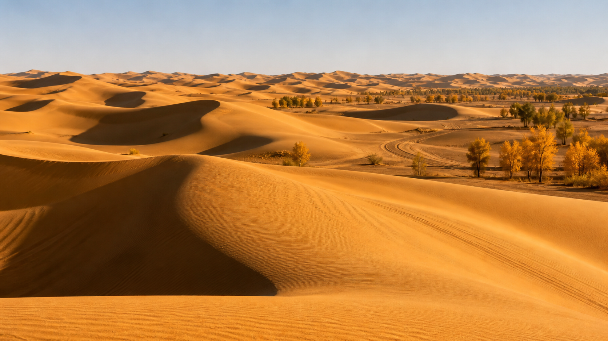

穿越"死亡之海"，挑战世界第二大流动沙漠。
塔克拉玛干沙漠位于新疆塔里木盆地中心，东西长约1000公里，南北宽约400公里，面积33万平方公里，是中国最大的沙漠，也是世界第二大流动沙漠。"塔克拉玛干"在维吾尔语中意为"进去就出不来"，故有"死亡之海"之称。然而，穿越沙漠的公路是人类工程的奇迹——塔里木沙漠公路（轮台至民丰）全长522公里，是全球最长的穿越流动沙漠的等级公路。沙漠腹地的胡杨林在秋季金黄一片，诠释着"生而一千年不死、死而一千年不倒、倒而一千年不朽"的生命传奇。

经典穿越路线：从库尔勒或轮台出发，沿塔里木沙漠公路南下至民丰（全程约522公里，车程约6—7小时）。沿途停靠：轮台胡杨林公园（世界最大的胡杨林保护区）、塔中油田（沙漠腹地的工业奇观）、沙漠观景台。建议在塔中住一晚，感受沙漠星空。第二天继续南下到达民丰，之后可前往和田或喀什。如果想深入沙漠腹地，可从和田出发探访达里雅布依（中国最大的原始村落）。
1. 沙漠公路全程柏油路面，普通车辆即可通行，但加油站间隔较长（约200公里），务必提前加满油。
2. 沙漠中手机信号覆盖不全（中国移动在公路沿线有信号塔），建议下载离线地图。
3. 沙漠昼夜温差极大，白天可能30℃以上，夜晚降到5℃以下，带足衣物。
4. 不要在沙漠中脱离公路擅自驾驶——极易陷车且救援困难。
轮台胡杨林公园（车程约1小时，世界最大胡杨林）、库车大峡谷（红色雅丹地貌，车程约3小时）、和田（玉石之都，从民丰出发车程约2.5小时）。